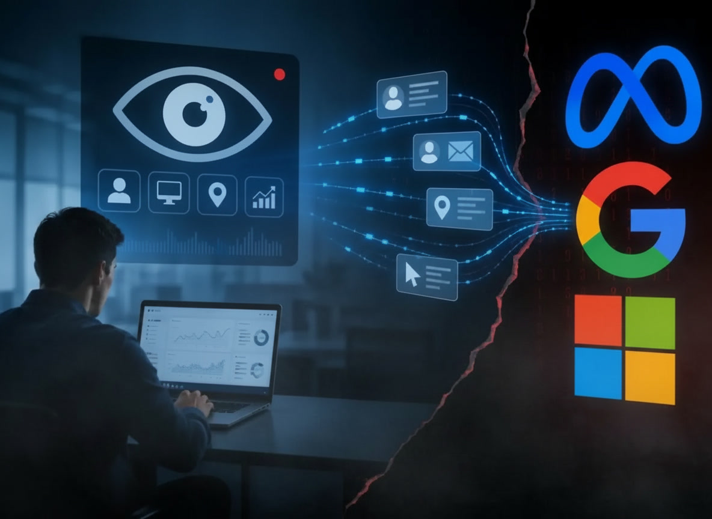

Your Boss's Tracking Software Is Secretly Sharing Your Data With Google, Meta & Microsoft — Study Reveals

Table of Contents
- The Study — Four Universities, Nine Apps, 100% Data-Sharing Rate
- What Is Bossware and How Widespread Is It?
- All 9 Bossware Apps Named in the Study
- Exactly What Data Is Being Shared
- The 145 Companies Receiving Your Workplace Data
- Off-the-Clock Location Tracking: The Most Alarming Finding
- How Bossware Data Sharing Actually Works Technically
- Is This Legal? What GDPR, CCPA, and US Law Say
- What the Researchers Recommend
- What Workers Can Actually Do Right Now
- Frequently Asked Questions
- Conclusion
If your employer uses monitoring software to track your work activity, there is a good chance that the data being collected about you is not staying with your employer. A new peer-reviewed study from researchers at Columbia Law School, Northeastern University, Vanderbilt University, and UC Berkeley has found that every single one of nine widely used workplace monitoring apps shares employee data with outside companies — including Google, Meta, and Microsoft — without meaningful disclosure to the workers being monitored.
The study, titled "Bossware Beyond the Workplace: Third-Party Data Sharing in Employee Monitoring Software", is the most comprehensive academic examination of bossware data practices published to date. Its findings represent a significant expansion of what surveillance researchers have previously documented about the workplace monitoring industry.
9 out of 9 bossware apps shared worker data with third parties.
121 instances of data sharing identified. 145 third-party companies receiving worker data. Source: Columbia Law School / Northeastern / Vanderbilt / UC Berkeley joint study, 2026.The Study — Four Universities, Nine Apps, 100% Data-Sharing Rate
Researchers conducted a technical analysis of nine widely deployed bossware platforms between late 2025 and early 2026. The methodology involved network traffic analysis — intercepting and examining the data packets sent by each app during normal operation — combined with an audit of each platform's privacy policies, terms of service, and any disclosure documentation provided to employers and employees.
The headline result: 100% of tested platforms transmitted worker data to third parties not directly involved in the employment relationship. The study identified 121 distinct instances of worker data sharing across the nine platforms, with data flowing to 145 different third-party companies.
Lead researcher Professor Jonah Perlin of Columbia Law School summarized the significance: the data being collected by employers for productivity monitoring purposes is simultaneously being monetized by the software companies through advertising and analytics partnerships — creating a secondary economy of worker surveillance data that employees are entirely unaware of.
What Is Bossware and How Widespread Is It?
Bossware is the colloquial term for employee monitoring software — applications installed on work devices (and in some cases personal devices used for work) that track productivity metrics on behalf of employers. The category expanded dramatically during the COVID-19 pandemic's remote work shift and has not contracted since. The global employee monitoring software market was valued at approximately $5.3 billion in 2024 and is projected to grow to $10.4 billion by 2030.
Standard bossware capabilities include:
| Capability | What It Captures | How Often |
|---|---|---|
| Time tracking | Login/logout times, active vs. idle time | Continuous |
| Screenshot capture | Periodic images of the worker's screen | Every 5–15 minutes (configurable) |
| Keyboard/mouse monitoring | Keystrokes per minute, mouse movement patterns | Continuous |
| Website tracking | Every URL visited and time spent | Continuous |
| App activity tracking | Which applications are open and for how long | Continuous |
| Email monitoring | Email content, recipients, send times (platform-dependent) | On event |
| GPS location | Precise coordinates, movement history | Periodic or continuous |
| Webcam activation | Live or periodic photos of the worker (some platforms) | Random or scheduled |
Also Read
More Technology Stories →All 9 Bossware Apps Named in the Study
The study did not anonymize its findings — it named every platform examined. All nine were found to share worker data with external third parties.
| App | Primary Use Case | Key Finding |
|---|---|---|
| Hubstaff | Time tracking, GPS, productivity | Data shared with Google Analytics, Facebook Pixel, and others |
| Time Doctor | Time tracking, screenshots, website monitoring | Multiple third-party analytics and advertising trackers |
| Monitask | Screenshot monitoring, time tracking | Third-party data transmission identified in network analysis |
| Deputy | Workforce management, scheduling | Data transmitted to external advertising and analytics platforms |
| Apploye | Employee monitoring, screenshots | Third-party data sharing confirmed |
| Desklog | Automatic time tracking, productivity | Third-party data sharing confirmed |
| Buddy Punch | Time and attendance tracking | Third-party data sharing confirmed |
| VeriClock | Time tracking, GPS location | Location data and identifying data shared externally |
| When I Work | Scheduling, time tracking | Third-party data sharing confirmed |
Important: Non-Exhaustive List
The study examined only nine platforms. The bossware market contains dozens of other providers including Teramind, ActivTrak, InterGuard, Veriato, and others. The researchers note there is no reason to believe the data-sharing practices found across 100% of their sample are unique to these nine platforms — they are likely industry-wide.
Exactly What Data Is Being Shared
The study's network analysis identified the following categories of worker data being transmitted to third parties:
| Data Category | Specific Data Points | Risk Level |
|---|---|---|
| Personal Identifiers | Full name, email address, username | High — links to advertising profiles |
| Organizational Data | Company name, employer, job role | Medium — enables professional profiling |
| Network Data | IP address, network type, ISP | High — enables location inference and persistent tracking |
| Device Data | Device ID, operating system, browser fingerprint | High — enables cross-context tracking |
| Behavioral Data | Websites visited, apps used, activity patterns | Very High — enables inference about health, relationships, job search |
| Location Data | GPS coordinates, movement history | Very High — reveals home address, medical visits, personal activities |
The behavioral and location data categories are the most sensitive because they enable inferences far beyond what an employer ostensibly collects for productivity purposes. A researcher quoted in the study noted: "Companies can monetize employee data by tracking when an app is used or what network a device is connected to — to infer things about your habits, your health, or whether you're looking for another job."
The 145 Companies Receiving Your Workplace Data
The most striking number in the study is 145 — the total count of distinct third-party companies that received worker data across the nine platforms. These include:
| Company | Type | What They Receive |
|---|---|---|
| Google (Google Analytics, Google Tag Manager, Firebase) | Analytics / Advertising | Behavioral data, device data, IP addresses, identifiers |
| Meta (Facebook Pixel) | Advertising | Personal identifiers, behavioral data, activity patterns |
| Microsoft (Clarity, Bing Ads) | Analytics / Advertising | Behavioral data, session recordings, device data |
| Professional Network / Advertising | Professional profile data, activity data | |
| Bing / Microsoft Advertising | Advertising | Behavioral and device data |
| Yandex | Analytics (Russian) | Behavioral and device data — particularly notable for international privacy concerns |
| AppLovin | Advertising Network | Device identifiers, behavioral patterns |
| 82 additional advertising / analytics platforms | Various | Various data categories |
| Data brokers (unnamed in study) | Data resale | Aggregated worker profiles |
Off-the-Clock Location Tracking: The Most Alarming Finding
The single most alarming finding in the study is that approximately one-third of tested bossware platforms were capable of tracking a worker's precise GPS location even when the app was running in the background — and potentially when the worker was off the clock and using the device for personal purposes.
This transforms bossware from a workplace productivity tool into a surveillance instrument that follows workers into their personal lives. Location data collected during off-hours can reveal: the worker's home address, the addresses of family members and romantic partners visited, medical facilities attended (inferring health conditions), places of worship visited (inferring religion), and time spent at competitor employers (inferring moonlighting or job searching).
What Off-Clock Location Data Can Reveal
If a bossware app tracks GPS continuously and that location data reaches a data broker, the following can be inferred: home address, health conditions (from clinic or hospital visits), religious affiliation (from place of worship visits), relationship status (from overnight stays), and whether the employee is interviewing for other jobs (from visits to competitor offices or professional spaces). Workers in the US have no federal right preventing their employer from receiving this data on company-owned devices.
How Bossware Data Sharing Actually Works Technically
The data sharing is not a deliberate decision by individual employers — most employers who purchase bossware do not know their vendor is sharing worker data with third parties. The sharing happens automatically through standard software development practices:
Third-party SDKs (Software Development Kits): Bossware apps are built using code libraries from Google (Firebase, Analytics), Meta (Pixel), and other platforms. These SDKs automatically transmit certain data to their parent companies every time the app runs, as part of their integration. The bossware vendor integrates these SDKs for analytics and crash reporting — but the SDKs collect and share far more data than the vendor may realize or disclose.
Advertising trackers embedded in login pages: Even before a worker starts a monitoring session, the bossware app's login page may load Facebook Pixel, Google Tag Manager, or Bing tracking scripts — transmitting the worker's IP address and device data to advertising networks before any intentional use begins.
Data broker partnerships: Some vendors appear to have explicit commercial relationships with data brokers — selling aggregated worker behavioral data as a secondary revenue stream. This is the most serious category because it involves deliberate monetization of worker surveillance data.
Is This Legal? What GDPR, CCPA, and US Law Say
The legal picture is complex and varies significantly by jurisdiction.
In the United States: No comprehensive federal employee privacy law exists. Most US states allow employers broad authority to monitor activity on company-owned devices with minimal disclosure requirements. However, the undisclosed sharing of worker data with advertising platforms and data brokers may run afoul of state laws in California (CCPA/CPRA), Virginia (VCDPA), and Connecticut (CTDPA), which extend data rights to employees in limited circumstances.
In the European Union: GDPR imposes strict requirements: workers must be notified of what data is collected, for what purposes, and with whom it is shared. Sharing worker data with advertising platforms without explicit legal basis and employee notification would almost certainly violate GDPR. The EU's Article 88 specifically addresses employment data processing. Penalties can reach 4% of global annual revenue.
In the UK: Post-Brexit UK GDPR maintains similar protections. The ICO (Information Commissioner's Office) has previously fined companies for unlawful employee monitoring. The bossware data-sharing practices described in this study would face significant scrutiny under UK data protection law.
Legal Grey Area for US Workers
The study's authors note that even where the employer-to-bossware-vendor relationship is legal (company-owned device, employment contract acknowledging monitoring), the bossware vendor's onward sharing with advertising platforms and data brokers is a separate transaction that the worker has not consented to — and that falls into a legal grey area in most US states. EU and UK workers have significantly stronger grounds for complaint.
What the Researchers Recommend
The study makes four specific policy recommendations:
1. Ban the sale and sharing of workplace data with third parties. Legislation should prohibit bossware vendors from sharing worker data with advertising platforms, data brokers, or any party not directly involved in the employment relationship — regardless of what the vendor's terms of service say. Vendors argue they disclose data practices in their privacy policies, but the study found these disclosures are typically inaccessible to and unread by the workers whose data is involved.
2. Require meaningful disclosure to workers. Currently, workers may be informed that "monitoring software is used" in their employment contract — but receive no information about what specifically is tracked, where data goes, or who receives it. The researchers recommend mandatory plain-language disclosure directly to workers, not just employers.
3. Prohibit off-clock tracking. GPS and behavioral monitoring should be legally prohibited outside of work hours. The technical capability for continuous tracking should not be permitted to function when a worker is not working.
4. Give workers data rights over their own monitoring data. Workers should have the right to access, correct, and request deletion of the data collected about them — the same rights that consumers have over commercial data under CCPA and GDPR. Currently, most workers have no such rights over their own productivity data.
What Workers Can Actually Do Right Now
The study is honest about the practical limits of individual action. Workers on company-owned devices using employer-mandated software cannot simply opt out without risking their jobs. However, some actions are available:
| Action | Effectiveness | Risk to Worker |
|---|---|---|
| Request a copy of your monitoring data from your employer (EU/UK workers under GDPR) | Moderate — legally enforceable in EU/UK | Low in EU/UK |
| Ask your employer which bossware platform is used and review its privacy policy | Low — policies are dense and not binding on workers | None |
| Use a separate personal device for all non-work activity | High — prevents bossware from accessing personal behavior | None |
| Log out of bossware apps when not working (if permitted) | Moderate — may prevent off-clock tracking | Low |
| Report suspected GDPR violations to your national data protection authority (EU/UK) | Moderate to High — regulators are increasingly active | Low, legally protected in most EU countries |
| Raise the issue with your union or works council (EU) | High — collective representation is the most effective route | Low where union representation exists |
Key Takeaways
- 9 out of 9 bossware apps — 100% of platforms tested — shared worker data with external third parties. Study conducted by Columbia Law School, Northeastern, Vanderbilt, and UC Berkeley.
- 121 instances of data sharing were identified across the nine platforms, with data flowing to 145 different companies including Google, Meta, Microsoft, LinkedIn, Bing, Yandex, and AppLovin.
- Data shared includes names, emails, company details, IP addresses, device identifiers, websites visited, and — in one-third of platforms — precise GPS location tracking that may continue off the clock.
- The nine named platforms are: Hubstaff, Time Doctor, Monitask, Deputy, Apploye, Desklog, Buddy Punch, VeriClock, and When I Work.
- Most employers who purchase bossware are unaware their vendors are reselling worker data to advertising platforms and data brokers as a secondary revenue stream.
- In the US, workers have minimal legal recourse. In the EU and UK, GDPR provides significant protections and undisclosed third-party sharing likely violates data protection law.
- The researchers' primary recommendation: legislation banning bossware vendors from selling or sharing worker data with any third party not directly involved in the employment relationship.
Frequently Asked Questions
What is bossware?
Bossware is workplace monitoring software installed on work devices to track productivity. It typically captures time worked, screenshots, keyboard/mouse activity, websites visited, app usage, and in some cases GPS location and webcam images. The global market was valued at $5.3 billion in 2024.
What did the 2026 bossware privacy study find?
Researchers from Columbia Law School, Northeastern, Vanderbilt, and UC Berkeley found that 9 out of 9 tested bossware platforms shared worker data with outside companies. They identified 121 instances of data sharing flowing to 145 different third-party companies including Google, Meta, Microsoft, LinkedIn, Bing, and Yandex.
Which bossware apps were named in the study?
Hubstaff, Time Doctor, Monitask, Deputy, Apploye, Desklog, Buddy Punch, VeriClock, and When I Work. All nine shared worker data without meaningful disclosure to the workers being monitored.
What specific data is being shared without workers knowing?
Full names, email addresses, company details, IP addresses, device identifiers, websites visited, app usage data, and in one-third of platforms, precise GPS location data — potentially including off-clock personal activity.
Can bossware track you when you're off the clock?
Yes. The study found approximately one-third of tested platforms could track precise GPS location even when running in the background — potentially during off-work hours. This can reveal home address, medical visits, places of worship, and whether a worker is job-searching.
Can employees opt out of bossware tracking?
In practice, no — without risking termination. The researchers recommend legislation banning third-party data sharing rather than placing the burden on individual workers. EU/UK workers can report suspected GDPR violations to national data protection authorities.
Is bossware data sharing legal?
In most US states, employer monitoring of company devices is broadly legal, but the onward sale of worker data to advertising platforms is legally grey. In the EU and UK, undisclosed third-party sharing likely violates GDPR and could be subject to regulatory fines of up to 4% of global revenue.
Conclusion
The study's 100% finding — nine platforms examined, nine platforms sharing worker data with third parties — is the clearest possible signal that this is not an edge case or a problem with a few bad actors. The undisclosed monetization of worker surveillance data is an industry-wide practice built into the standard commercial model of the bossware sector.
Workers who are tracked by their employers for productivity purposes are simultaneously being profiled by advertising networks, data brokers, and technology companies who have no relationship to their employment. Their daily work patterns, websites visited, location data, and behavioral fingerprints are being packaged and sold without their knowledge or consent. In many jurisdictions, this is currently legal. The researchers argue, compellingly, that it should not be.
The finding that location tracking may continue off the clock — that the productivity surveillance tool your employer installed on your work laptop may be quietly transmitting your personal movements to 145 companies while you sleep — represents a qualitative leap in the intrusiveness of workplace monitoring that most workers, and arguably most employers, are entirely unaware is happening.
The appropriate response is legislation. Until it arrives, the most effective protection for individual workers remains a simple one: keep personal devices and activity entirely separate from employer-owned hardware and employer-mandated software.

Dr. Amara Singh
Senior Editor
Experienced journalist bringing you accurate, well-researched stories on technology, privacy, and digital rights.
Leave a Comment